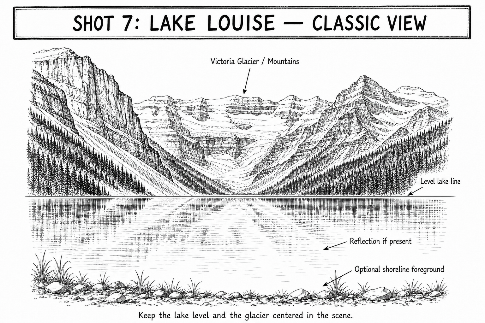

Primary real example
Shots by Peter
Classic Lake Louise view toward Victoria Glacier.
Open the original exampleShot 07 | Day 7 | September 23 | Lake Louise
Reference links for this shot.

These examples stay on their original sites. No photographer images are copied into this guide.
Primary real example
Classic Lake Louise view toward Victoria Glacier.
Open the original example